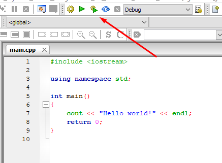
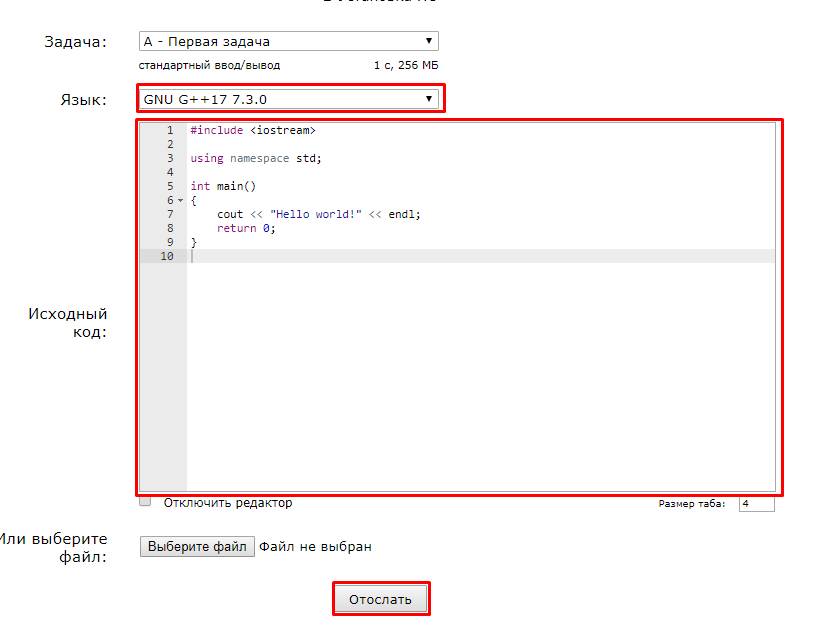

Совсем скоро мы начнем изучать программирование, и для этого нам необходима среда разработки.
Среда разработки — это программа, в которой можно писать и запускать код. Вам она понадобится для того, чтобы практиковаться и выполнять задачи к урокам. Существует много различных сред и у каждой свои плюсы и минусы. Для обучения мы советуем использовать Codeblocks, так как эта программа весит всего 80 МБ, но при этом обладает всеми нужными функциями. В данной статье мы расскажем, как установить эту среду. Но если вдруг вы захотите использовать другую программу, то вам не составит труда найти инструкцию по её установке в интернете.
Другие популярные среды разработки:
Microsoft Visual Studio (Профессиональная среда разработки для больших проектов)
https://csacademy.com/workspace (Онлайн среда разработки. Не требуется устанавливать, но должен быть постоянный доступ в интернет)
Dev C++ (Легкая, но устаревшая среда)
В приложении мы будем приводить ссылки, которые необходимо открывать на компьютере. Чтобы скопировать ссылку, просто нажмите на нее. Теперь вы сможете отправить её на свой компьютер любым удобным для вас способом.
Ссылка на скачивание Codeblocks:
Шаг 1. Перейдите по ссылке и дождитесь пока программа скачается.
Шаг 2. Откройте скачанный файл. Нажмите следующую последовательность кнопок:
Next -> I Agree -> Next
Шаг 3. Дождитесь установки программы. После завершения вы увидите надпись:
Do you want to run Codeblocks now? (Вы хотите сейчас запустить Codeblocks?). Нажмите Yes.
Шаг 4. В следующих двух окнах нажмите кнопку OK.
Шаг 5. Если вы все сделали правильно, то через некоторое время увидите следующее окно

Шаг 6. Нажмите на кнопку Create a new project в центре экрана, чтобы создать новый проект (место, где вы будете писать код).
Для того, чтобы решать наши задачи, вам потребуется создавать консольные приложения (Console application).
Позже мы объясним, что это такое. Нажмите соответствующую кнопку и перейдите к следующему окну.

Шаг 7. Вы увидите окно приветствия. Нажмите Next, чтобы перейти дальше.
Шаг 8. Вам предложат выбрать язык программирования. Выберите C++ и нажмите кнопку Next.
Шаг 9. Придумайте название своего проекта. Введите его в строке Project title.
В поле Folder to create project in: выберите место на компьютере, где вам удобно хранить ваш проект. В моем случае это диск C.
Нажмите кнопку Next.

Шаг 10. На следующем окне находится служебная информация. Можете ничего не менять и нажать Finish.
Если вы все сделали правильно, то слева вы увидете свой проект и папку Sources, где будет находится ваш код. Откройте ее, нажав на
плюсик рядом с названием папки.

Шаг 11. Нажмите дважды на файл main.cpp, чтобы открыть его. Вы увидете некую программу (не волнуйтесь, на следующем занятии мы разберем, что она делает).
Шаг 12. Давайте запустим ее.
Для запуска программы необходимо выполнить два шага.
Первый шаг - скомпилировать программу.
Второй шаг - выполнить программу.
Компиляция — это процесс, который превращает вашу программу в удобный для компьютера машинный код. Выполнение — это процесс запуска, скомпилированной программы.
Значок скомпилировать - желтая шестеренка
Значок выполнить - зеленый треугольник.
Codeblocks предоставляет удобную возможность скомпилировать и выполнить программу одновременно. Для этого
нужно нажать кнопку с желтой шестеренкой и маленьким зеленым треугольником. (Обычно всегда нажимают именно эту кнопку, чтобы запустить ваш код)

Если все сделано правильно, то откроется следующее окно:

Эта программа выводит в консоль надпись Hello world!.
Ваша среда для разработки почти готова. Теперь вы можете писать и запускать здесь свои программы. Консольное приложение — это такая программа,
которая читает данные из консоли, обрабатывает данные и выводит информацию обратно в консоль.
Примерно так и происходит разработка больших приложений. Вы пишете маленькие программы, которые взаимодействуют между собой, передавая
друг другу информацию. Консоль — это удобный способ для взаимодействия человека с программой. Вскоре, вы также научитесь,
как программы могут взаимодействовать между собой.
При повторном открытии Codeblocks не обязательно создавать проект заново. Вы сможете открыть прошлый проект, нажав следующую кнопку.
Шаг 13. Установите одну из новых версий C++. Для этого откройте владку Settings на верхней панели Codeblocks и нажмите
на кнопку Compiler...
Шаг 14. Поставтьте галочку напротив третьей строки Have g++ follow the C++14 ISO C++ language standard и нажмите OK.
Поздравляем, вы успешно настроили свою среду программирования!
Зарегистрируйтесь на сайте codeforces, чтобы мы могли проверять ваши решения. На этом сайте находятся все наши задачи и программа, которая проверяет ваш код.
Чтобы зарегистрироваться на Codeforces, перейдите по этой ссылке:
Придумайте свой никнейм (Хэндл), введите e-mail и пароль и нажмите на кнопку Зарегистрироваться. Подтвердите свой e-mail, перейдя по ссылке в письме, которое вам придет. Аккаунт создан!
Зарегистрируйтесь в нашей группе, чтобы отправлять свои решения. Перейдите по этой ссылке и нажмите кнопку вступить.
В конце каждого урока находится ссылка на список задач. Там есть возможность посмотреть условия задачи, разбор и отметить задачу, как решенную. Например, вот ссылка на задачи к этой лекции. Но не спешите переходить по ней, сначала дочитайте статью до конца.
К этой статье приложена одна задача, но уже в следующей лекции задач будет несколько. Чтобы переключаться между ними используйте стрелочки на верхней панели.
В задаче к этой лекции, требуется скопировать и отослать код, который вы увидели в Codeblocks. Чтобы отправить решение задачи,
откройте ее на компьютере, перейдя по ссылке под условиями. Нажмите кнопку Отослать.

В центре экрана вы увидите большое окно с надписью Исходный код: . Скопируйте код из Codebocks сюда.
В будущем вы будете писать собственный код и также копировать его в это окно.
Убедитесь, что в поле Язык: указано значение "GNU G++17 7.3.0".
Нажмите кнопку Отослать.

Вы увидите таблицу с вашими решениями. Последнее решение вверху. В столбце вердикт находится одно из следующих значений:
В очереди - подождите немного, скоро ваше решение проверится.
Выполняется на тесте - ваше решение проверяется в текущий момент времени.
Неправильный ответ - ваше решение неверно.
Ошибка выполнения - в вашей программе ошибка, и она вылетела во время работы.
Ошибка компиляции - в вашем коде есть ошибки, и программу запустить невозможно.
Полное решение - все хорошо, ваше решение правильное.

Если вы увидели "Полное решение", значит подготовка к курсу закончена. Не забудьте отметить эту задачу, как решенную, в приложении.
Удачи в освоении программирования!